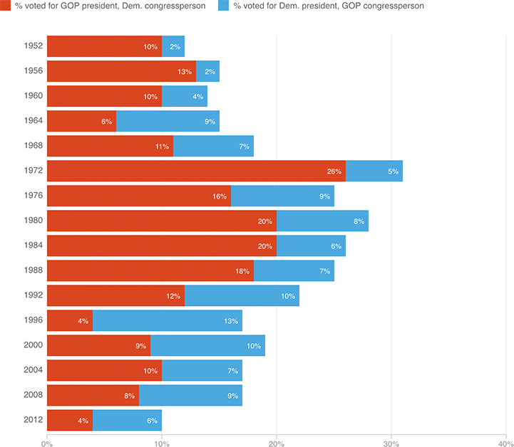

Split Ticket Voters Have Mostly Vanished
Since 1972, the share of voters who chose a president of one major party and a Congress member of the other has fallen dramatically — in 2012, only 10 percent of voters split their ticket in this way. One big question of 2016 is whether those voters reappear, given a choice between two heavily-disliked major-party presidential candidates.
